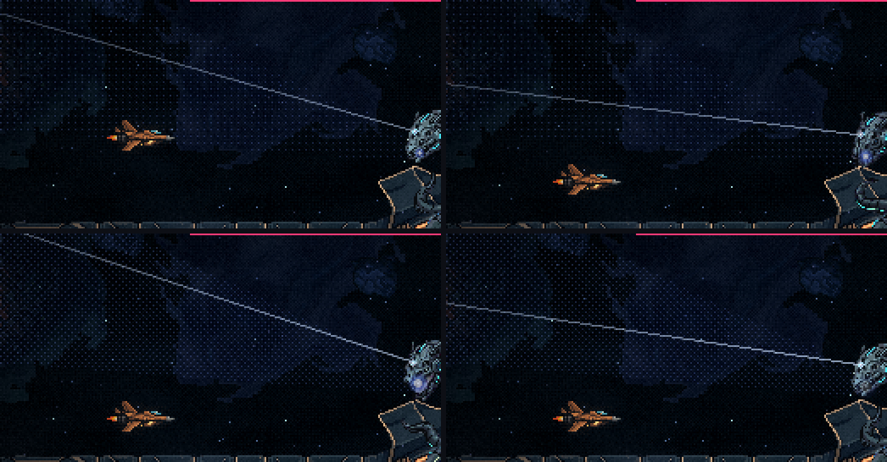
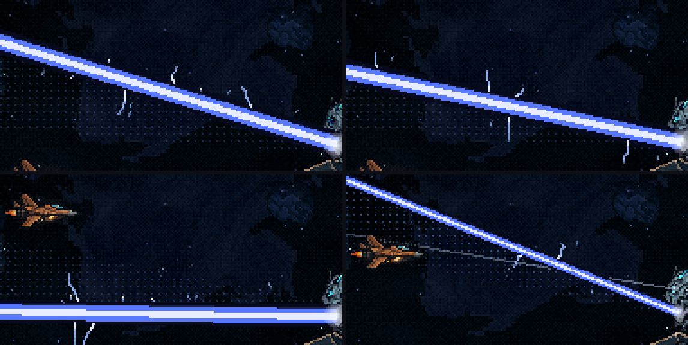
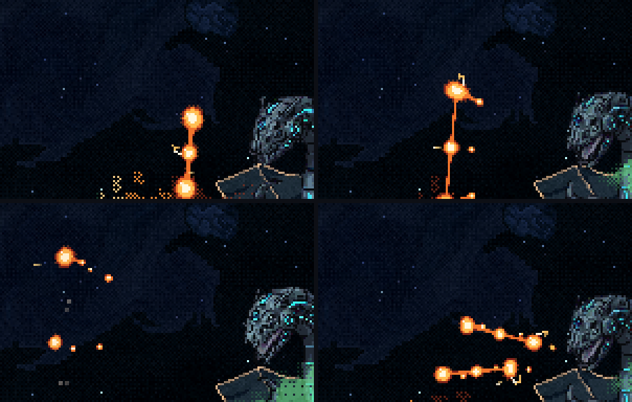

A Serpente: o foco reto e as faíscas
01/11/2026 · rodada 10 das habilidades (o raio da azul e o plasma) · nada foi commitado.
O que você disse sobre a raio-salva.html:
- "essa aberração de foco saiu em todos os raios. Isso é para compensar a falta de movimento da cabeça da serpente azul, isso não pode acontecer. O foco sai como um foco de verdade, não faz curva. Assim, a cabeça da serpente precisa mexer para cada ataque e varredura."
- "o desenho da varredura pode ser bem mais suave, ele aparece, mas não com tanta intensidade, ele é um aviso sutil do caminho que o laser/raio vai fazer"
- "quero que adicione efeitos no raio, como se faíscas elétricas saíssem ou em volta dele. O mesmo eu quero com o plasma. os efeitos não machucam, só visual"
Você tem razão: os feixes do olho dobravam para encontrar as linhas, e era isso que escondia a cabeça parada. O que mudou:
- O foco sai reto do olho. É uma linha só, fina, que vai do olho até o fim do caminho e corre pelo caminho do raio durante a carga, como se o olho ensaiasse a varredura (duas vezes na carga longa, uma na salva). Não dobra mais.
- O caminho ficou sutil: sobraram só um sombreado bem fraco, exatamente onde o raio vai passar, e o foco. Saíram as linhas tracejadas, os pontos correndo e os feixes dobrados.
- Faíscas elétricas no raio e no plasma, só visuais: não machucam e não mudam nada do jogo.
O foco e o caminho

A cabeça: no vídeo ela continua no idle, então o foco e o raio giram sem ela. Como você disse, a cabeça precisa girar em cada ataque e em cada varredura. Isso vem da animação do PixelLab, porque girar a cabeça em código seria movimento fingido.
As faíscas
- No raio: arcos curtos e quebrados pulam das bordas, mudando a cada quadro, e faíscas azuis saem voando dele. O raio grosso tem mais faíscas que o fino da salva.
- No plasma: arcos pequenos lambem a pele de cada bola de geleia (raiz branca, ponta âmbar), e de vez em quando ela solta uma faísca.
- Elas usam um sorteio separado do da física, então tudo o que foi medido continua igual: as folgas do raio (19, 14 e 5 px) e a do plasma (12,7 px).


Para você decidir
- O foco e o caminho: estão na intensidade certa, ou o caminho ficou suave demais para a salva, que é rápida?
- As faíscas: a quantidade está boa, no raio e no plasma?
- A cabeça girando: faço agora a animação da azul (a cabeça virando com o foco e o raio), antes das outras habilidades, ou junto com todas?